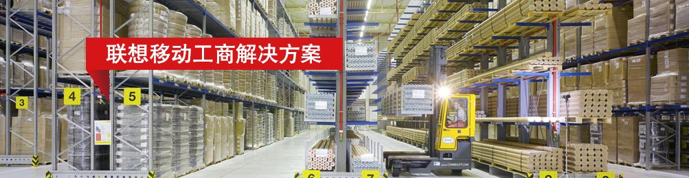
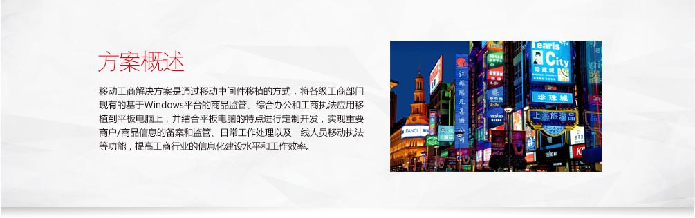
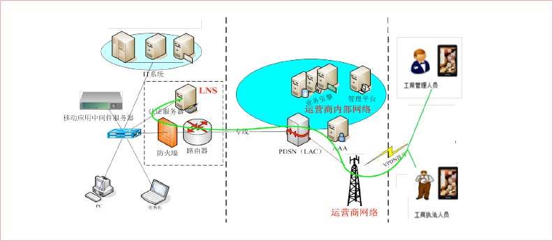
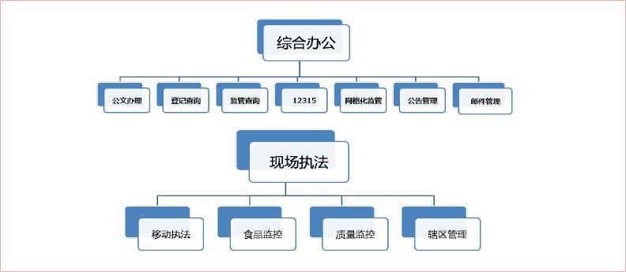

项目背景
- 安全性：具备完善的身份认证、访问控制、日志管理、系统审计、数据加密等安全保密机制，保证网络系统、主机系统和应用系统的安全，为客户提供完整安全机制。
- 易操作性：保证在功能和人机交互界面上贴近用户日常办公习惯，功能模块和功能按钮的说明应定义清晰、命名直观，达到简单易用、提高工作效率的目的。
- 可扩充性：采用符合国际标准和适应发展潮流的信息系统技术、可平滑扩展的系统硬件体系结构，确保系统在处理能力和业务功能方面可灵活扩充，并可与其它系统进行无缝集成。
核心功能
客户收益
系统上线投入以后，办公人员只要通过联想乐Pad，就可以随时查看公文、处理流程、发送邮件等，极大提高了办公效率！
通过联想乐Pad平板电脑，弥补了传统IT系统的在时间、空间上的业务限制。并且随着业务发展，用户可以基于移动终端设计业务模式及流程，让客户有了更灵活、更高效、更加符合快速响应业务流程及要求的可能性！
基于现阶段系统功能平台，为了可以快速、高效、易用的平移任何PC端应用至移动终端乐Pad，解决了用户的后顾之忧及成本投入！

联想移动互联解决方案
联想移动互联解决方案以最终用户的体验为出发点，借助移动互联、大数据分析、云计算等创新技术，通过业务流程的再造，实现了企业资源的合理规划和高效运转。
联想在移动互联领域，通过梳理客户业务流程，整合行业专业应用软件，针对客户的行业特质以及业务需求进行深度定制，目前已储备超过200余项专业解决方案。更多解决方案以及产品、案例、咨询信息，请通过以下入口进入（ID:Lenovomia）：